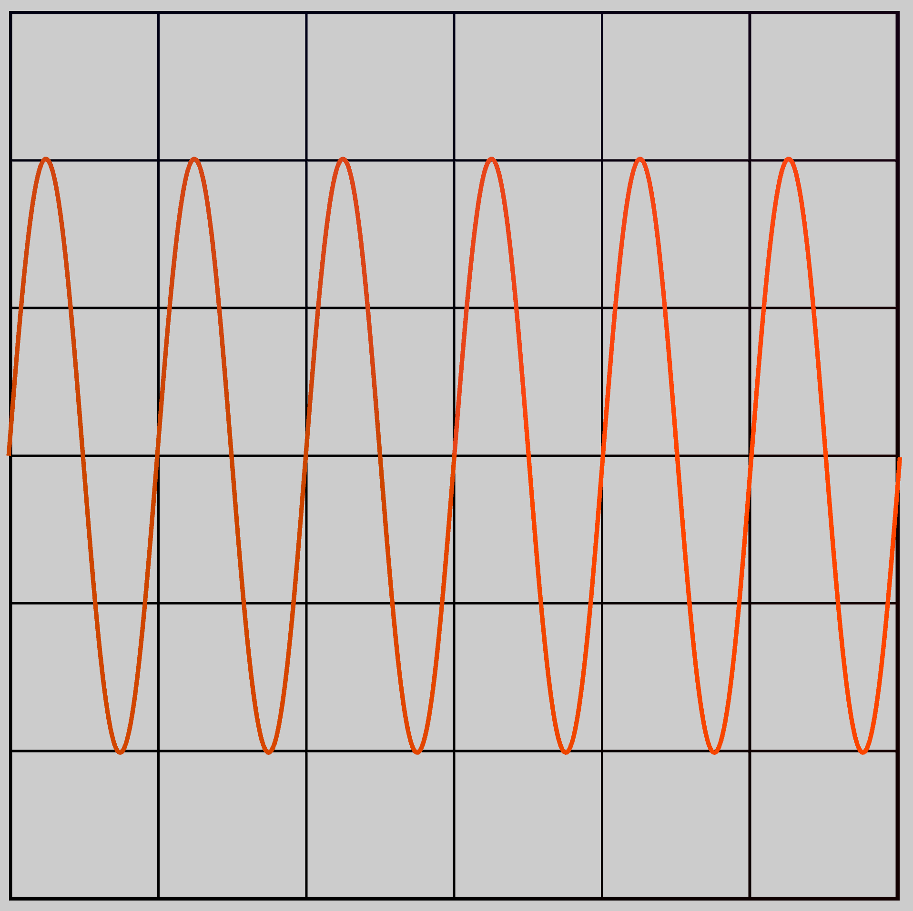

ccl-project и math-visualizer
Проект на github.com
Библиотека конструирования компилятора ccl
Возможности библиотеки:
- Генератор символов
- Лексический анализатор
- Помощник в генерации кода
- Другие возможности для упрощения создания компилятора
Генератор символов
Генератор символов выполняет следующие задачи:
- Преобразование UTF-8 в UTF-32
- Отслеживание позиции в файле
- Подсчет количество пробелов и символов табуляции перед токеном
- Предоставление информации для исключений
Правило для лексического анализатора
Модификаторы правила:
- ! - элемент может стоять в любом месте (рекомендуется применять к терминальным символам грамматики)
Правило состоит из 4 основных элементов:
К каждому правилу могут быть применены следующие постфиксальные модификаторы:
- p - элемент является префиксом/постфиксом (изначально создается префикс, но если уже существует элемент, который не является префиксным, то создается постфикс)
- ^ - все, кроме данного элемента
- {n, m} - элемент повторяется от n до m раз включительно
- * - повторяется ноль раз или больше
- + - повторяется больше нулю раз
- ? - повторяется 0 или 1 раз
Примеры правил можно найти тут
Множество символов
Множество символов задается скобками [ и ].
Внутри множества прописываются символы, которы в него входят.
Для задания последовательности символом используется -.
К примеру, множество [a-z] будет включать в себя все символы от a до z.
Если необходимо включить в правило -, [ или другой специальный символ, то необходимо поставить \ перед символов.
Строка
Строка - упорядоченное множество из n символов. Строка задается символами, заключенными между ". Если необходимо включить специальный символ, то ставится \ перед ним.
"some \"string\"..."
Логический элемент
Логический элемент создается при помощи операторов | и &.
- | - или первый или второй элемент
- & - первый и второй элемент (при анализе будет учитываться только длина первого)
[a-z] | [0-9]
Контейнер правил
Контейнер правил может содержать в себе другие элементы правила (включая другие контейнеры). Контейнер создается при помощи ( и ).
([a-z] [0-9])
Примеры правил
! [+]- знак сложения, который может находиться где угодно[0-9]+ ( [a-zA-Z_] [a-zA-Z0-9_]* )?p- последовательность цифр, за которой следует опциональный постфикс в виде идентификатора! "\"" (["\n]^ | "\\\"")* "\""- элемент, который заключен между " и может находиться в любом месте; внутри него находятся либо символы, кроме " и символа новой строки, либо \" (стандартная строчка в языке программирования)
RulesReader
Класс RulesReader предназначен для чтения правил из файла и создания генератора парсеров.
Методы и конструктор
RulesReader(
const std::unordered_map<std::string, SmallId> &default_rules,
isl::string_view input, isl::string_view filename = {}) – принимает на вход словарь с правилами по умолчанию, строку с текстом правил и имя файла, из которого был прочитан текст. Ключом в словаре правил по умолчанию служит название правила, а значение это уникальный номер правила.
ParserBuilder & getParserBuilder() – возвращает генератор парсеров.
ParserBuilder
Класс ParserBuilder хранит в себе созданные правила и позволяет сгенерировать различные типы парсеров по ним.
Методы и конструктор
ParserBuilder(const std::unordered_map<std::string, SmallId> &default_rules) –
принимает на вход словарь с правилами по умолчанию (более подробно про словарь с правилами написано в RulesReader.
LrParser buildLr1() – создает LR(1) парсер.
GlrParser buildGlr() – создает GLR парсер.
Ll1Parser buildLl1() – создает LL(1) парсер.
GllParser buildGLL() – создает GLL парсер.
SmallId addRule(const std::string &rule_name) – добавляет правило в генератор парсеров и возвращает уникальный номер созданного правила.
std::functionstd::string(SmallId) getIdToNameTranslationFunction() const – создает функцию, которая по уникальному номеру возвращает название правила.
Astlang2
Astlang2 это простой интерпретируемый язык программирования. Поддерживает статическая и динамическая типизация. На данный момент поддерживаются операции с базовыми типами данных, создание функции, доступ к полям объекта и вызов методов.
Структура программы
Исполнение начинает с глобального блока. Исполнение начинается с глобального блока. Вызов функции возможен только после объявления. Поддерживается рекурсивный вызов функций.
Типы данных
int- целочисленный типuint- целочисленный тип без знакаfloat- вещественный типdouble- вещественный тип с двойной точностьюbool- логический типstring- строковый типvoid- тип отсутствия значенияvec2- вектор из двух элементов типаfloatvec3- вектор из трех элементов типаfloat
Операторы
+- сложение-- вычитание*- умножение/- деление%- остаток от деления==- равно!=- не равно>- больше<- меньше>=- больше или равно<=- меньше или равно&&- логическое и||- логическое или!- логическое не=- присваивание+=- сложение с присваиванием-=- вычитание с присваиванием*=- умножение с присваиванием/=- деление с присваиванием.- доступ к полю объекта()- вызов функции
Приоритет операторов аналогичен приоритету операторов в языке C++. Со встроенными типами данных бинарные операции можно выполнять только если типы данных совпадают.
Control flow
if- условный операторelif- ветвь условного оператораelse- ветвь условного оператора
while- цикл с предусловием
var i = 0;
while i < 10 {
println(i);
i = i + 1;
}
println("Done!");
Вывод программы:
0
1
2
3
4
5
6
7
8
9
Done!
var a = 5;
if a > 3 {
println("a is greater than 3");
} elif a == 3 {
println("a is equal to 3");
} else {
println("a is less than 3");
}
Вывод программы:
a is greater than 3
Функции
Функции объявляются с помощью ключевого слова def. Функция может принимать любое количество аргументов. Возвращаемое значение функции указывается после символа ->. Если функция не возвращает значение, то указывается тип any. Пример объявления функции:
def sum(int a, int b) -> int {
return a + b;
}
Грамматика языка astlang2 в формате cclp
%PARSER%
GOAL:
GLOBAL_DECLARATIONS
GLOBAL_DECLARATIONS:
GLOBAL_DECLARATION GLOBAL_DECLARATIONS
| GLOBAL_DECLARATION
| EPSILON
GLOBAL_DECLARATION:
FUNCTION_DEFINITION
| PARSER_RULE
| LEXER_RULE
| STATEMENT
LEXER_RULE:
"lexer" IDENTIFIER
'{'
LEXER_RULE_BODY
'}'
LEXER_RULE_BODY:
LEXER_RULE_BODY ',' EXPRESSION
| EXPRESSION
| EPSILON
PARSER_RULE:
"parser" IDENTIFIER
'{'
PARSER_RULE_BODY
'}'
PARSER_RULE_BODY:
PARSER_SYMBOLS ';' PARSER_FUNCTIONS
PARSER_FUNCTIONS:
PARSER_FUNCTIONS FUNCTION_DEFINITION
| FUNCTION_DEFINITION
| EPSILON
PARSER_SYMBOLS:
PARSER_SYMBOLS ',' EXPRESSION
| EXPRESSION
| EPSILON
FUNCTION_DEFINITION:
"def" IDENTIFIER '(' FUNCTION_DEFINITION_ARGUMENTS ')' FUNCTION_RETURN_TYPE
'{'
STATEMENTS
'}'
FUNCTION_DEFINITION_ARGUMENTS:
FUNCTION_DEFINITION_ARGUMENT ',' FUNCTION_DEFINITION_ARGUMENTS
| FUNCTION_DEFINITION_ARGUMENT
| EPSILON
FUNCTION_DEFINITION_ARGUMENT:
TYPE IDENTIFIER
FUNCTION_RETURN_TYPE:
'->' TYPE
| EPSILON
STATEMENTS:
STATEMENT STATEMENTS
| STATEMENT
| EPSILON
STATEMENT:
ASSIGNMENT_EXPRESSION ';'
| VARIABLE_DECLARATION ';'
| TYPE_VARIABLE_DECLARATION ';'
| FOR_LOOP
| WHILE_LOOP
| IF_STATEMENT
| RETURN_STATEMENT ';'
RETURN_STATEMENT:
"return" ASSIGNMENT_EXPRESSION
| "return"
IF_STATEMENT:
IF_BLOCK
ELIF_BLOCK
ELSE_BLOCK
IF_BLOCK:
"if" ASSIGNMENT_EXPRESSION
'{'
STATEMENTS
'}'
ELIF_BLOCK:
"elif" ASSIGNMENT_EXPRESSION
'{'
STATEMENTS
'}'
ELIF_BLOCK
| EPSILON
ELSE_BLOCK:
"else"
'{'
STATEMENTS
'}'
| EPSILON
LOGICAL_OR_EXPRESSION:
LOGICAL_OR_EXPRESSION '||' LOGICAL_AND_EXPRESSION
| LOGICAL_AND_EXPRESSION
LOGICAL_AND_EXPRESSION:
LOGICAL_AND_EXPRESSION '&&' BITWISE_OR_EXPRESSION
| BITWISE_OR_EXPRESSION
BITWISE_OR_EXPRESSION:
BITWISE_OR_EXPRESSION '|' BITWISE_XOR_EXPRESSION
| BITWISE_XOR_EXPRESSION
BITWISE_XOR_EXPRESSION:
BITWISE_XOR_EXPRESSION '^' BITWISE_AND_EXPRESSION
| BITWISE_AND_EXPRESSION
BITWISE_AND_EXPRESSION:
BITWISE_AND_EXPRESSION '&' EQUALITY
| EQUALITY
EQUALITY:
EQUALITY '==' COMPARISON
| EQUALITY '!=' COMPARISON
| COMPARISON
COMPARISON:
COMPARISON '<' EXPRESSION
| COMPARISON '>' EXPRESSION
| COMPARISON '<=' EXPRESSION
| COMPARISON '>=' EXPRESSION
| EXPRESSION
ASSIGNMENT_EXPRESSION:
LOGICAL_OR_EXPRESSION '=' ASSIGNMENT_EXPRESSION
| LOGICAL_OR_EXPRESSION
EXPRESSION:
EXPRESSION '+' TERM
| EXPRESSION '-' TERM
| TERM
TERM:
TERM '*' VALUE
| TERM '/' VALUE
| VALUE
VALUE:
'-' VALUE
| '+' VALUE
| FACTOR
VARIABLE_DECLARATION:
"var" IDENTIFIER '=' ASSIGNMENT_EXPRESSION
TYPE_VARIABLE_DECLARATION:
"var" IDENTIFIER ':' TYPE '=' ASSIGNMENT_EXPRESSION
FOR_LOOP:
"for" IDENTIFIER "in" ASSIGNMENT_EXPRESSION
'{'
STATEMENTS
'}'
WHILE_LOOP:
"while" ASSIGNMENT_EXPRESSION
'{'
STATEMENTS
'}'
FUNCTION_CALL:
IDENTIFIER '(' FUNCTION_CALL_ARGUMENTS ')'
FUNCTION_CALL_ARGUMENTS:
ASSIGNMENT_EXPRESSION ',' FUNCTION_CALL_ARGUMENTS
| ASSIGNMENT_EXPRESSION
| EPSILON
METHOD_CALL:
FACTOR '.' IDENTIFIER '(' FUNCTION_CALL_ARGUMENTS ')'
FIELD_ACCESS:
FACTOR '.' IDENTIFIER
FACTOR:
NUMBER
| FLOAT
| ARRAY
| "true"
| "false"
| IDENTIFIER
| STRING
| FUNCTION_CALL
| METHOD_CALL
| FIELD_ACCESS
| '(' ASSIGNMENT_EXPRESSION ')'
ARRAY:
'[' ARRAY_ELEMENTS ']'
ARRAY_ELEMENTS:
ASSIGNMENT_EXPRESSION ',' ARRAY_ELEMENTS
| ASSIGNMENT_EXPRESSION
TYPE:
IDENTIFIER
| IDENTIFIER '<' TYPE '>'
%LEXER%
IDENTIFIER: [a-zA-Z_] [a-zA-Z0-9_]*
FLOAT: [0-9]+[.][0-9]+
NUMBER: [0-9]+
STRING: ! ["] ("\\\"" | ["]^)* ["]
Программа по визуализации математических функций
Описание
Набор инструментов для визуализации 2D и 3D объектов, а также математических функций.
Базовый класс приложения
Описание
Базовый класс OpenGl приложение с интеграцией ImGUI.
Методы класса
Application(int width, int height, std::string window_title, int multisampling_level) – создает окно приложения с заданными параметрами и производит инициализацию OpenGL, GLFW, ImGUI.
virtual ~Application()
void run() – запускает цикл обработки событий и отрисовки.
virtual void init() – метод инициализации приложения.
virtual void update() – метод обновления приложения.
virtual void onResize(int width, int height) – вызывается при изменении размера приложения.
virtual void onMouseMovement(double x_pos_in, double y_pos_in) – вызывается при движении мыши, в качестве параметром передается позиция мыши.
virtual void onMouseRelativeMovement(double delta_x, double delta_y) – вызывается при движении мыши, в качестве параметров передается относительное передвижение мыши (от прошлого кадра).
virtual void onScoll(double x_offset, double y_offset) – вызывается при прокрутке колеса мыши.
void setClearColor(glm::vec4 clear_color) – устанавливает цвет очистки экрана.
virtual void processInput() – вызывается при вводе изменении состояния ввода с клавиатуры.
virtual void onLeaveOrEnter(bool entered) – вызывается при выходе приложения из фокуса пользователя и при появлении в фокусе.
template<b::embed_string_literal fontPath> – загружает шрифт для ImGui из встроенного ресурса.
ImFont * loadFont(const float font_size = 45.0F) const
Базовый класс приложения для 2D графики
Описание
Базовый класс OpenGl приложение для 2D графики с интеграцией ImGUI.
Объявление
class Application2D : public Application
Методы класса
void processInput() override – вызывает метод базового класса и изменяет позицию камеры, по нажатию клавиш W, A, S, D.
Базовый класс приложения для 3D графики
Описание
Базовый класс OpenGl приложение для 3D графики с интеграцией ImGUI.
Объявление
class Application3D : public Application
Методы класса
void processInput() override – вызывает метод базового класса и изменяет позицию камеры, по нажатию клавиш W, A, S, D.
Camera
Описание
Класс, который позволяет управлять положением и ориентацией камеры в пространстве.
Публичные поля
float movementSpeed – скорость передвижения камеры, при вызове
методов move().
Методы и конструкторы
Camera(const glm::vec3 position, const glm::vec3 camera_up, const float camera_yaw, const float camera_pitch)
– конструктор, который инициализирует положение и ориентацию камеры.
glm::mat4 getViewMatrix() const – возвращает матрицу вида камеры.
float getZoom() const noexcept – возвращает угол обзора камеры.
void move(const CameraMovement direction, const float deltaTime) – перемещает камеру в заданном направлении.
void rotate(const double x_pos_in, const double y_pos_in) – поворачивает камеру по оси X и Y .
void processMouseMovement(float xOffset, float yOffset, const GLboolean constrainPitch) – обрабатывает движение мыши.
void processMouseScroll(float yOffset) – обрабатывает прокрутку колеса мыши, изменяя zoom.
void move(const float delta_time, const float multiplier = 1.0F) – перемещает камеру вперед, назад, влево, вправо, в зависимости от вызванной функции.
Shader
Описание
Класс Shader, предназначен для создания шейдера. Класс собирает шейдер из исходного кода и компилирует его. Поддерживаются шейдеры типа вершинный и фрагментный. После компиляции содержит в себе номер программы, после вызова деструктора программа будет уничтожена.
Методы и конструкторы
Shader( const std::vector<std::string> &vertex_shaders,
const std::vector<std::string> &fragment_shaders) – в качестве аргументов передаются исходные коды шейдеров на языке GLSL.
~Shader() – деструктор.
void use() – активирует шейдер.
void setBool(const std::string &name, bool value) const – устанавливает значение типа bool в uniform шейдера.
void setInt(const std::string &name, int value) const – устанавливает значение типа int в uniform шейдера.
void setFloat(const std::string &name, float value) const – устанавливает значение типа float в uniform шейдера.
void setVec2(const std::string &name, const glm::vec2 &value) const – устанавливает значение типа glm::vec2 в uniform шейдера.
void setVec3(const std::string &name, const glm::vec3 &value) const – устанавливает значение типа glm::vec3 в uniform шейдера.
void setVec4(const std::string &name, const glm::vec4 &value) const – устанавливает значение типа glm::vec4 в uniform шейдера.
void setMat2(const std::string &name, const glm::mat2 &mat) const – устанавливает значение типа glm::mat2 в uniform шейдера.
void setMat3(const std::string &name, const glm::mat3 &mat) const – устанавливает значение типа glm::mat3 в uniform шейдера.
void setMat4(const std::string &name, const glm::mat4 &mat) const – устанавливает значение типа glm::mat4 в uniform шейдера.
PolygonShape
Описание
Базовый класс объекта сцены. Содержит в себе информацию, о вершинах фигуры и определяет методы для работы с ней.
Объявление
class Shape : public VerticesContainer<glm::vec3>
Методы и конструкторы
Shape()
virtual ~Shape()
void draw() const – устанавливает VAO фигуры и вызывает метод doDraw.
virtual void doDraw() const = 0 – реализует отрисовку фигуры.
void drawAt(const Shader &shader, const glm::vec3 location, const float angle = 0.0F, const glm::vec3 rotation_vec) const – отрисовывает фигуру с заданным смещением и углом поворота.
PolygonShape
Описание
Базовый класс полигона. Реализует функцию по отрисовки полигона.
Объявление
class PolygonsShape : public Shape
Методы и конструкторы
void doDraw() const -> override – реализует отрисовку полигона, как набора треугольников.
Sphere
Описание
Класс для создания сферы. В результате будет создан PolygonsShape, который можно добавить в сцену.
Объявление
class Sphere final : public detail::PolygonsShape
Методы и конструкторы
Sphere(float radius, isl::u32 slices, isl::u32 stacks) – создает сферу с заданным радиусом и количеством фрагментов.
Prism
Описание
Класс для создания призмы. В результате будет создан Polygon, который можно добавить в сцену.
Объявление
class Prism : public detail::Polygon
Методы и конструкторы
Prism(float radius, float height, uint32_t vertices_count) – создает призму заданной высоты и с основанием, равным правильному многоугольнику с радиусом описанной окружности равным radius.
Function3D
Описание
Класс для создания функции в 3D. В результате будет создан PolygonsShape, который можно добавить в сцену.
Объявление
class Function3D final : public detail::PolygonsShape
Методы и конструкторы
Function3D(const std::function<float(glm::vec2)> &function, const float min_x, const float min_y,
const float min_z, const float max_x, const float max_y, const float max_z) – создает функцию по заданной формуле.
Axes3D
Описание
Класс для создания системы координат с 3 координатными осями. В результате будет создан Polygon, который можно добавить в сцену.
Объявление
class Axes3D final : public detail::Polygon
Методы и конструкторы
Axes3D(std::int32_t axis_size) – создает систему координат заданного размера.
Axes2D
Описание
Класс для создания системы координат с 2 координатными осями. В результате будет создан Polygon, который можно добавить в сцену.
Объявление
class Axes2D final : public detail::Polygon
Методы и конструкторы
Axes2D(std::int32_t axis_size) – создает систему координат заданного размера.
Plot2D
Описание
Класс для создания графика функции по заданным точкам. В результате будет создан PolygonsShape, который можно добавить в сцену.
Объявление
class Plot2D final : public detail::PolygonsShape
Методы и конструкторы
Plot2D(std::span –
создает график функцию по заданным точкам.

VBO
Описание
VBO (Vertex Buffer Object) - это объект, который хранит массив вершинных данных. VBO используется для хранения вершинных данных, таких как позиция, цвет, текстурные координаты и т.д.
Методы и конструкторы
VBO() - создает VBO, сохраняя его номер в переменной instanceVBO.
~VBO() - удаляет созданный буфер.
void bind() const - привязывает VBO к текущему контексту OpenGL.
void unbind() const - отвязывает VBO от текущего контекста OpenGL.
void setData(const void *data, size_t size, GLenum mode = GL_STATIC_DRAW) - загружает данные в VBO по переделанному адресу.
VBO
Описание
VAO (Vertex Array Object) - это объект, который хранит настройки вершинных атрибутов. VAO используется для хранения настроек вершинных атрибутов, таких как позиция, цвет, текстурные координаты и т.д.
Методы и конструкторы
VAO() - создает VAO, сохраняя его номер в переменной instanceVAO.
~VAO() - удаляет созданный объект.
void bind() const – привязывает VAO к текущему контексту OpenGL.
void unbind() const - отвязывает VAO от текущего контекста OpenGL.
void bind(GLsizei array_attribute, GLint size, GLenum type, GLsizei stride, GLsizei offset) - устанавливает атрибуты вершинного массива для шейдера.
void bindInstanceParameters(GLsizei array_attribute, GLint divisor) - устанавливает параметры инстансирования для шейдера.
Фрактал
class FractalApplication final : public mv::Application2D
{
private:
std::array<char, 128> imguiWindowBuffer{};
mv::Shader mandelbrotFractalShader = mv::Shader{
{b::embed<"resources/shaders/fractal/default.vert">().str()},
{
b::embed<"resources/shaders/fractal/mandelbrot.frag">().str(),
b::embed<"resources/shaders/fractal/common.glsl">().str(),
},
};
// Поле где будет рисоваться фрактал
mv::gl::VerticesContainer<glm::vec3> mandelbrotVertices{
{2.0F, 2.0F, 0.0F}, {2.0F, -2.0F, 0.0F}, {-2.0F, -2.0F, 0.0F},
{2.0F, 2.0F, 0.0F}, {-2.0F, -2.0F, 0.0F}, {-2.0F, 2.0F, 0.0F},
};
double pressTime = 0.0;
ImFont *font = nullptr;
float fontScale = 0.5F;
int mandelbrotIterations = 1000;
public:
using Application2D::Application2D;
auto init() -> void override
{
Application2D::init();
glfwSetInputMode(window, GLFW_CURSOR, GLFW_CURSOR_DISABLED);
mandelbrotVertices.loadData();
mandelbrotVertices.vbo.bind();
mandelbrotVertices.vao.bind(0, 3, GL_FLOAT, sizeof(glm::vec3), 0);
// снижаем чувствительность камеры
camera.movementSpeed = 0.5F;
ImGui::StyleColorsDark();
font = loadFont<"resources/fonts/JetBrainsMono-Medium.ttf">(30.0F);
mandelbrotFractalShader.use();
mandelbrotFractalShader.setInt("iterations", mandelbrotIterations);
}
auto mandelbrotFractal() -> void
{
if (ImGui::SliderInt("Iterataions", &mandelbrotIterations, 5, 4000)) {
mandelbrotFractalShader.use();
mandelbrotFractalShader.setInt("iterations", mandelbrotIterations);
}
mandelbrotFractalShader.use();
mandelbrotFractalShader.setMat4("projection", getResultedViewMatrix());
mandelbrotVertices.vao.bind();
glDrawArrays(GL_TRIANGLES, 0, mandelbrotVertices.vertices.size());
}
auto update() -> void override
{
fmt::format_to_n(
imguiWindowBuffer.data(), imguiWindowBuffer.size(),
"Настройки. FPS: {:#.4}###SettingWindowTitle", ImGui::GetIO().Framerate);
ImGui::Begin(imguiWindowBuffer.data());
ImGui::PushFont(font);
ImGui::SetWindowFontScale(fontScale);
mandelbrotFractal();
if (ImGui::Button("Center camera")) {
camera.setPosition(glm::vec3(0.0F, 0.0F, 2.0F));
}
ImGui::SameLine();
ImGui::SliderFloat("Font scale", &fontScale, 0.1F, 1.5F, "%.3f");
ImGui::PopFont();
ImGui::End();
}
auto processInput() -> void override
{
constexpr static auto key_press_delay = 0.2;
Application2D::processInput();
const auto left_alt_pressed = glfwGetKey(window, GLFW_KEY_LEFT_ALT) == GLFW_PRESS;
const auto key_g_pressed = glfwGetKey(window, GLFW_KEY_G) == GLFW_PRESS;
if (left_alt_pressed && key_g_pressed) {
const auto mode = glfwGetInputMode(window, GLFW_CURSOR);
const double new_press_time = glfwGetTime();
if (new_press_time - pressTime < key_press_delay) {
return;
}
pressTime = new_press_time;
firstMouse = true;
isMouseShowed = mode == GLFW_CURSOR_DISABLED;
glfwSetInputMode(
window, GLFW_CURSOR, isMouseShowed ? GLFW_CURSOR_NORMAL : GLFW_CURSOR_DISABLED);
}
}
// Перемещаем камеру относительно мыши
auto onMouseRelativeMovement(const double delta_x, const double delta_y) -> void override
{
const auto scale = camera.getZoom() / 9000.0F;
camera.relativeMove(camera.getUp() * static_cast<float>(delta_y) * scale);
camera.relativeMove(camera.getRight() * static_cast<float>(delta_x) * scale);
}
// Масштабируем скорость зума в зависимости от приближения
auto onScroll(const double x_offset, const double y_offset) -> void override
{
const auto scale = static_cast<double>(camera.getZoom()) / 90.0;
Application2D::onScroll(x_offset * scale, y_offset * scale);
}
};
Дискретное преобразование Фурье
#include <battery/embed.hpp>
#include <complex>
#include <imgui.h>
#include <imgui_stdlib.h>
#include <isl/linalg/linspace.hpp>
#include <mv/application_2d.hpp>
#include <mv/application_3d.hpp>
#include <mv/gl/axes_2d.hpp>
#include <mv/gl/instances_holder.hpp>
#include <mv/gl/shape/plot_2d.hpp>
#include <mv/gl/shape/sphere.hpp>
#include <mv/gl/vertices_container.hpp>
#include <mv/shader.hpp>
#include <numbers>
#include <valarray>
class DftApplication final : public mv::Application2D
{
private:
constexpr static auto windowTitleBufferSize = 128;
constexpr static std::array<std::string_view, 8> frequenciesNames = {
"1 Гц", "2 Гц", "3 Гц", "4 Гц", "5 Гц", "6 Гц", "7 Гц", "8 Гц",
};
std::array<char, windowTitleBufferSize> imguiWindowBuffer{};
mv::Shader colorShader = mv::Shader{
{b::embed<"resources/shaders/colored_shader.vert">().str()},
{b::embed<"resources/shaders/fragment.frag">().str()},
};
mv::Shader shaderWithPositioning = mv::Shader{
{b::embed<"resources/shaders/static_instance.vert">().str()},
{b::embed<"resources/shaders/fragment.frag">().str()},
};
mv::gl::shape::Axes2D plot{3};
mv::gl::shape::Plot2D resultedSignalGraph;
mv::gl::shape::Plot2D dftGraph;
mv::gl::shape::Sphere sphere{1.0F};
mv::gl::InstancesHolder<mv::gl::InstanceParameters> sphereInstances;
ImFont *font;
double pressTime = 0.0;
float fontScale = 0.5F;
float frequency = 2.0F;
float lineWidth = 0.02F;
float sphereRadius = 0.023F;
std::array<bool, 8> selectedFrequencies{false, true, false, false, false, false, false, false};
isl::u32 pointsCount = 2048 * 4;
isl::u32 pointsCountMin = 128;
isl::u32 pointsCountMax = 2048 * 16;
isl::u32 pointsDrawDivider = 32;
isl::u32 pointsDrawDividerMin = 1;
isl::u32 pointsDrawDividerMax = 128;
std::valarray<float> xLinearSpace = isl::linalg::linspace<float>(0, 10, pointsCount);
std::valarray<float> signalLinearSpace = std::valarray<float>(xLinearSpace.size());
public:
using Application2D::Application2D;
auto init() -> void override
{
Application2D::init();
glfwSetInputMode(window, GLFW_CURSOR, GLFW_CURSOR_DISABLED);
plot.loadData();
plot.vbo.bind();
plot.vao.bind(0, 3, GL_FLOAT, sizeof(glm::vec3), 0);
resultedSignalGraph.loadData();
resultedSignalGraph.vbo.bind();
resultedSignalGraph.vao.bind(0, 3, GL_FLOAT, sizeof(glm::vec3), 0);
dftGraph.loadData();
dftGraph.vbo.bind();
dftGraph.vao.bind(0, 3, GL_FLOAT, sizeof(glm::vec3), 0);
sphere.vbo.bind();
sphere.vao.bind(0, 3, GL_FLOAT, sizeof(glm::vec3), 0);
sphereInstances.vbo.bind();
sphere.vao.bindInstanceParameters(1, 1);
ImGui::StyleColorsLight();
font = loadFont<"resources/fonts/JetBrainsMono-Medium.ttf">(30.0F);
setClearColor({0.8F, 0.8F, 0.8F, 1.0F});
calculateSignal();
calculateDft();
}
auto calculateSignal() -> void
{
signalLinearSpace = std::valarray<float>(xLinearSpace.size());
for (size_t i = 0; i != selectedFrequencies.size(); ++i) {
if (selectedFrequencies.at(i)) {
const auto freq = static_cast<float>(i + 1);
for (std::size_t j = 0; j != xLinearSpace.size(); ++j) {
signalLinearSpace[j] +=
std::sin(2.0F * std::numbers::pi_v<float> * freq * xLinearSpace[j]) + 1;
}
}
}
resultedSignalGraph.fill(xLinearSpace, signalLinearSpace, 0.015F);
resultedSignalGraph.loadData();
}
auto calculateDft() -> void
{
sphereInstances.models.clear();
auto x2 = std::valarray<float>(xLinearSpace.size());
auto y2 = std::valarray<float>(xLinearSpace.size());
std::complex<float> center_of_mass{};
for (std::size_t i = 0; i != xLinearSpace.size(); ++i) {
auto point =
signalLinearSpace[i] * std::exp(
std::complex(0.0F, 2.0F) * std::numbers::pi_v<float> *
frequency * xLinearSpace[i]);
center_of_mass += point;
x2[i] = point.imag();
y2[i] = point.real();
}
center_of_mass /= static_cast<float>(xLinearSpace.size());
for (std::size_t i = 0; i < x2.size(); i += pointsDrawDivider) {
sphereInstances.models.emplace_back(
glm::vec4{0.1F, 0.8F, 0.1F, 1.0F},
glm::scale(
glm::translate(
glm::mat4(1.0F),
{
x2[i],
y2[i],
0.01F,
}),
glm::vec3{sphereRadius}));
}
dftGraph.fill(x2, y2, lineWidth);
sphereInstances.models.emplace_back(
glm::vec4{0.0F, 0.0F, 1.0F, 1.0F},
glm::scale(
glm::translate(
glm::mat4(1.0F),
{
center_of_mass.imag(),
center_of_mass.real(),
0.01F,
}),
glm::vec3{2.5F * sphereRadius}));
sphereInstances.loadData();
dftGraph.loadData();
}
auto update() -> void override
{
fmt::format_to_n(
imguiWindowBuffer.data(), imguiWindowBuffer.size(),
"Настройки. FPS: {:#.4}###SettingWindowTitle", ImGui::GetIO().Framerate);
ImGui::Begin(imguiWindowBuffer.data());
ImGui::PushFont(font);
ImGui::SetWindowFontScale(fontScale);
colorShader.use();
colorShader.setMat4("projection", getResultedViewMatrix());
colorShader.setMat4(
"model", glm::translate(glm::mat4(1.0F), glm::vec3{0.0F, 0.0F, -0.01F}));
colorShader.setVec4("elementColor", glm::vec4(0.0F, 0.0F, 0.0F, 1.0F));
plot.draw();
colorShader.setMat4("model", glm::mat4(1.0F));
colorShader.setVec4("elementColor", glm::vec4(1.0F, 0.301F, 0.0F, 1.0F));
dftGraph.draw();
shaderWithPositioning.use();
shaderWithPositioning.setMat4("projection", getResultedViewMatrix());
sphere.vao.bind();
glDrawArraysInstanced(
GL_TRIANGLE_STRIP, 0, sphere.vertices.size(), sphereInstances.models.size());
if (ImGui::Button("Center camera")) {
camera.setPosition(glm::vec3(0.0F, 0.0F, 2.0F));
}
if (ImGui::SliderFloat(
"Frequency", &frequency, 1.0F,
static_cast<float>(selectedFrequencies.size()) + 1.0F)) {
calculateDft();
}
for (size_t i = 0; i != selectedFrequencies.size(); ++i) {
if (ImGui::Checkbox(frequenciesNames[i].data(), &selectedFrequencies[i])) {
calculateSignal();
calculateDft();
}
if (i + 1 != selectedFrequencies.size() / 2 && i != selectedFrequencies.size() - 1) {
ImGui::SameLine();
}
}
if (ImGui::SliderFloat("Line width", &lineWidth, 0.01F, 0.1F)) {
calculateDft();
}
if (ImGui::SliderFloat("Sphere radius", &sphereRadius, 0.01F, 0.1F)) {
calculateDft();
}
if (ImGui::SliderScalar(
"Points count", ImGuiDataType_U32, &pointsCount, &pointsCountMin, &pointsCountMax,
"%u")) {
xLinearSpace = isl::linalg::linspace<float>(0, 10, pointsCount);
calculateSignal();
calculateDft();
}
if (ImGui::SliderScalar(
"Sphere draw divider", ImGuiDataType_U32, &pointsDrawDivider, &pointsDrawDividerMin,
&pointsDrawDividerMax, "%u")) {
calculateDft();
}
ImGui::SliderFloat("Font scale", &fontScale, 0.1F, 1.5F, "%.3f");
ImGui::PopFont();
ImGui::End();
}
auto processInput() -> void override
{
constexpr static auto key_press_delay = 0.2;
Application2D::processInput();
const auto left_alt_pressed = glfwGetKey(window, GLFW_KEY_LEFT_ALT) == GLFW_PRESS;
const auto key_g_pressed = glfwGetKey(window, GLFW_KEY_G) == GLFW_PRESS;
if (left_alt_pressed && key_g_pressed) {
const auto mode = glfwGetInputMode(window, GLFW_CURSOR);
const double new_press_time = glfwGetTime();
if (new_press_time - pressTime < key_press_delay) {
return;
}
pressTime = new_press_time;
firstMouse = true;
isMouseShowed = mode == GLFW_CURSOR_DISABLED;
glfwSetInputMode(
window, GLFW_CURSOR, isMouseShowed ? GLFW_CURSOR_NORMAL : GLFW_CURSOR_DISABLED);
}
}
auto onMouseRelativeMovement(const double delta_x, const double delta_y) -> void override
{
const auto scale = camera.getZoom() / 9000.0F;
camera.relativeMove(camera.getUp() * static_cast<float>(delta_y) * scale);
camera.relativeMove(camera.getRight() * static_cast<float>(delta_x) * scale);
}
auto onScroll(const double x_offset, const double y_offset) -> void override
{
const auto scale = static_cast<double>(camera.getZoom()) / 180.0;
Application2D::onScroll(x_offset * scale, y_offset * scale);
}
};
auto main() -> int
{
DftApplication application{1000, 800, "Dft", 2};
application.run();
return 0;
}
Отрисовка пользовательской функции в 3D
Описание
Создается приложение, в котором пользователь может вводить функцию на языке ast-lang-2 и отрисовывать ее график в 3D.

Код
#include <ast-lang-2/interpreter/interpreter.hpp>
#include <battery/embed.hpp>
#include <ccl/runtime.hpp>
#include <imgui.h>
#include <imgui_stdlib.h>
#include <mv/application_3d.hpp>
#include <mv/gl/axes_3d.hpp>
#include <mv/gl/instance_parameters.hpp>
#include <mv/gl/instances_holder.hpp>
#include <mv/gl/shape/function_3d.hpp>
#include <mv/gl/shape/sphere.hpp>
#include <mv/shader.hpp>
#include <mvl/mvl.hpp>
class FunctionVisualizer3DApplication final : public mv::Application3D
{
private:
std::array<char, 128> imguiWindowBuffer{};
mv::Shader colorShader = mv::Shader{
{b::embed<"resources/shaders/colored_shader.vert">().str()},
{b::embed<"resources/shaders/fragment.frag">().str()},
};
mv::gl::shape::Axes3D axes3D{12};
mv::gl::shape::Function3D function;
double pressTime = 0.0;
float evaluationTimeNs = 0.0;
float fontScale = 0.33F;
ImFont *font = nullptr;
std::string sourceCode = R"(
def f(vec2 a) {
return a.x * a.x + a.y * a.y;
}
)";
std::string programOutput = "";
bool disableInput = false;
public:
using Application3D::Application3D;
auto init() -> void override
{
Application3D::init();
setClearColor({0.8F, 0.8F, 0.8F, 1.0F});
glfwSetInputMode(window, GLFW_CURSOR, GLFW_CURSOR_DISABLED);
function.loadData();
axes3D.loadData();
function.vbo.bind();
function.vao.bind(0, 3, GL_FLOAT, sizeof(glm::vec3), 0);
axes3D.vbo.bind();
axes3D.vao.bind(0, 3, GL_FLOAT, sizeof(glm::vec3), 0);
colorShader.use();
colorShader.setMat4("model", glm::mat4(1.0f));
colorShader.setVec4("elementColor", glm::vec4(0.5f, 0.5f, 0.0f, 1.0f));
ImGui::StyleColorsLight();
font = loadFont<"resources/fonts/JetBrainsMono-Medium.ttf">(45.0F);
camera.setPosition(glm::vec3(0.0F, 12.0F, 10.0F));
}
auto update() -> void override
{
fmt::format_to_n(
imguiWindowBuffer.data(), imguiWindowBuffer.size(),
"Settings. FPS: {:#.4}###SettingWindowTitle", ImGui::GetIO().Framerate);
ImGui::Begin(imguiWindowBuffer.data());
ImGui::PushFont(font);
ImGui::SetWindowFontScale(fontScale);
ImGui::SliderFloat("Font scale", &fontScale, 0.1F, 3.0F, "%.3f");
ImGui::InputTextMultiline("##Program input", &sourceCode);
if (ImGui::Button("run")) {
tryToDrawFunctionWithUserFunction();
}
disableInput = ImGui::IsWindowFocused();
ImGui::TextUnformatted(programOutput.c_str(), programOutput.c_str() + programOutput.size());
const glm::mat4 resulted_matrix = getResultedViewMatrix();
colorShader.use();
colorShader.setVec4("elementColor", glm::vec4(0.5f, 0.5f, 0.0f, 1.0f));
colorShader.setMat4("projection", resulted_matrix);
function.draw();
colorShader.setVec4("elementColor", glm::vec4(0.1f, 0.1f, 0.1f, 1.0f));
axes3D.draw();
ImGui::PopFont();
ImGui::End();
}
auto tryToDrawFunctionWithUserFunction() -> void
{
try {
ccl::runtime::async(calculateFunctionPoints()).await();
} catch (const std::exception &e) {
programOutput = e.what();
}
}
auto calculateFunctionPoints() -> isl::Task<>
{
auto node = ccl::runtime::async(mvl::parse(sourceCode, "stdin"));
programOutput.clear();
auto interpreter = mvl::newInterpreter(std::back_inserter(programOutput));
(co_await node)->compute(interpreter);
const auto *user_function = interpreter.getFunction(
astlang2::function::FunctionIdentification{
.name = "f",
.arguments = isl::SmallVector<astlang2::ts::Type *, 4>{interpreter.getVec2()},
.returnType = interpreter.getDouble()});
const auto *vec2_constructor = interpreter.getFunction(
astlang2::function::FunctionIdentification{
.name = "vec2",
.arguments =
isl::SmallVector<astlang2::ts::Type *, 4>{
interpreter.getDouble(), interpreter.getDouble()},
.returnType = interpreter.getVec2()});
const std::function function_invoker = [&user_function, &interpreter,
vec2_constructor](glm::vec2 vec) {
auto vec2 = vec2_constructor->call(
interpreter, {astlang2::Value{
.object = astlang2::AstlangObject<double>(vec.x),
.type = interpreter.getDouble()},
astlang2::Value{
.object = astlang2::AstlangObject<double>(vec.y),
.type = interpreter.getDouble()}});
const auto result = user_function->call(interpreter, {vec2});
return static_cast<float>(*static_cast<double *>(result.object.get()));
};
const auto begin = std::chrono::high_resolution_clock::now();
this->function.evaluatePoints(
function_invoker, -10.0F, -10.0F, -15.0F, 10.0F, 10.0F, 15.0F);
const auto end = std::chrono::high_resolution_clock::now();
this->function.loadData();
fmt::println("{}us", (end - begin) / std::chrono::microseconds(1));
co_return;
}
auto processInput() -> void override
{
constexpr static auto key_press_delay = 0.2;
if (!disableInput) {
Application3D::processInput();
}
const auto left_alt_pressed = glfwGetKey(window, GLFW_KEY_LEFT_ALT) == GLFW_PRESS;
const auto key_g_pressed = glfwGetKey(window, GLFW_KEY_G) == GLFW_PRESS;
if (left_alt_pressed && key_g_pressed) {
const auto mode = glfwGetInputMode(window, GLFW_CURSOR);
const double new_press_time = glfwGetTime();
if (new_press_time - pressTime < key_press_delay) {
return;
}
pressTime = new_press_time;
firstMouse = true;
isMouseShowed = mode == GLFW_CURSOR_DISABLED;
glfwSetInputMode(
window, GLFW_CURSOR, isMouseShowed ? GLFW_CURSOR_NORMAL : GLFW_CURSOR_DISABLED);
}
}
};
auto main() -> int
{
FunctionVisualizer3DApplication application{1000, 800, "Function visualizer", 16};
application.run();
return 0;
}